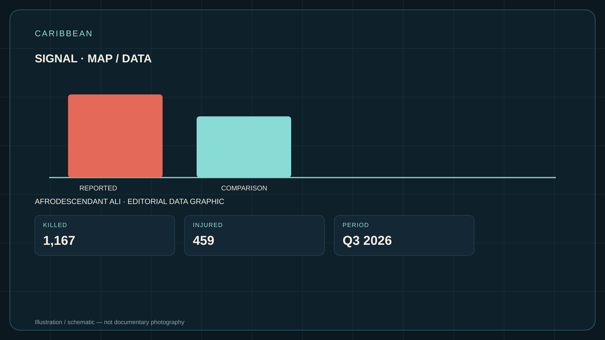

UN report documents 1,167 killings in Haiti in third quarter
A BINUH report covering 1 July–30 September records 1,167 people killed and 459 injured amid gang attacks, security operations and self-defence incidents.

What We Know
The UN Integrated Office in Haiti (BINUH) report covers 1 July through 30 September 2026. It records 1,167 people killed and 459 injured in the reporting period.
How the report classifies incidents
The report attributes 45% of recorded incidents to gang attacks, 50% to security-force operations and 5% to self-defence or unorganized violence. It says 85% of recorded incidents were in the West Department.
Why It Matters
The figures describe reported and documented violence during a defined quarter. They do not by themselves settle responsibility for every death or measure all violence that went unreported.
What We’re Watching
The next reporting periods, civilian-protection conditions, access for humanitarian actors, and any independent or judicial follow-up to allegations involving armed groups and security operations.